정보통신기사 (2023-06-17 기출문제)
1과목: 정보전송일반
1. 다음 그림의 회로 명칭은?
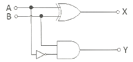
- 가산기
- 감산기
- 반감산기
- 비교기
(정답률: 69%)
2. 어떤 신호가 4개의 데이터 준위를 가지며 펄스시간은 1[ms]일 때 비트 전송률은 얼마인가?
- 1,000[bps]
- 2,000[bps]
- 4,000[bps]
- 8,000[bps]
(정답률: 52%)
3. 다음 중 데이터의 신호처리 과정에서 나타나는 엘리어싱(Aliasing) 현상에 대한 설명으로 틀린 것은?
- 표본화율이 나이키스트 표본화율보다 낮으면 발생한다.
- 엘리어싱이 발생하면 원래의 신호를 정확히 재생하기 어렵다.
- 표본화 전에 HPF(High Pass Filter)를 사용하여 엘리어싱을 방지할 수 있다.
- 주파수스펙트럼 분포에서 서로 이웃하는 부분이 겹쳐서 발생한다.
(정답률: 68%)

4. 2비트 데이터 크기를 4준위 신호 중 하나에 속하는 2비트 패턴의 1개 신호 요소로 부호화하는 회선 부호화(Line Coding) 방식은?
- RZ(Return to Zero)
- NRZ-I(Non Return to Zero – Inverted)
- 2B/IQ
- Differential manchester
(정답률: 73%)
5. 다음 회로에서 출력 X에 대한 부울식은?
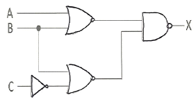
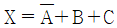
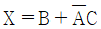
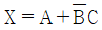
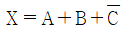
(정답률: 68%)
6. 통신용 중계케이블의 통화전압이 55[V]이고 잡음전압이 0.⑤5[V]이면 잡음레벨[dB]은?
- 44[dB]
- 50[dB]
- 55[dB]
- 60[dB]
(정답률: 66%)
7. 통신용 케이블 중 UTP(Unshielded Twisted-Pair) 케이블 규격에 대한 설명으로 틀린 것은?
- CAT.5 케이블의 규격은 10BASE-T이다.
- CAT.5E 케이블의 규격은 1000BASE-T이다.
- CAT.6 케이블의 규격은 1000BASE-TX이다.
- CAT.7 케이블의 규격은 10GBASE이다.
(정답률: 57%)
8. 광섬유 케이블에서 빛을 집광하는 능력 즉, 최대 수광각 범위 내로 입사시키기 위한 광학 렌즈의 척도를 무엇이라 하는가?
- 개구수(Numerical Aperture, NA)
- 조리개 값(F-number)
- 분해거리(Resolved Distance)
- 초점심도(Depth of Focus)
(정답률: 70%)
9. 인공위성이나 우주 비행체와 같이 매우 빠른 속도로 운동하는 경우 전파발진원의 이동에 따라서 수신주파수가 변하는 현상은?
- 페이저 현상
- 플라즈마 현상
- 도플러 현상
- 전파지연 현상
(정답률: 77%)
10. 무선통신시스템에서 송신출력이 10[W], 송수신 안테나 이득이 각각 25[dBi], 수신 전력이 –20[dBm]이라고 할 때 자유공간 손실은 몇 [dB] 인가? (단, 전송선로 손실 및 기타 손실은 무시한다)
- 100 [dB]
- 1⑤ [dB]
- 110 [dB]
- 115 [dB]
(정답률: 54%)
11. 통신시스템에서 데이터 전송 시 비트율이 고정되어 있을 때 다원 베이스 밴드 전송(Multilevel Baseband Transmission)을 사용하여 심볼당 비트 수를 증가시켜 전송한다면 어떠한 효과가 있는가?
- 전송 대역폭을 줄일 수 있다.
- 전송 전력을 줄일 수 있다.
- 비트 에러율이 줄어든다.
- 얻어지는 효과가 없다.
(정답률: 58%)
12. 데이터 전송 시 서로 다른 전송 선로상의 신호가 정전 결합, 전자 결합 등 전기적 결합에 의하여 다른 회선에 영향을 주는 현상은?
- 왜곡(Distortion)
- 누화(Crosstalk)
- 잡음(Noise)
- 지터(Jitter)
(정답률: 70%)
13. 데이터 통신 다중화 기법 중 시분할 다중화(TDM)에 대한 설명으로 틀린 것은?
- 망동기가 필요하다.
- 수신시 비트 및 프레임 동기가 필요하다.
- 인접채널간 간섭을 줄이기 위해 보호대역이 필요하다.
- 데이터 프레임 구성시 필요한 오버헤드가 커서 데이터 전송 효율이 떨어진다.
(정답률: 58%)
14. 이동통신시스템의 주파수 변조방식인 OFDM(Orthogonal Frequency Division Multiplexing)과 FDM(Frequency Division Multiplexing)을 비교한 설명으로 적합하지 않은 것은?
- OFDM과 FDM은 정보 전송을 위하여 주파수 대역을 나눈다는 공통점이 있다.
- OFDM 방식에서는 직교성을 사용하여 FDM 방식보다 대역폭 효율이 좋지 않다.
- FDM 방식은 OFDM 방식과 동일하게 다중 부반송파를 사용한다.
- FDM 방식은 많은 수의 변복조기가 필요하다.
(정답률: 72%)
15. 다음 보기의 설명으로 적합한 것은?
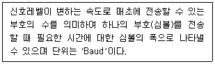
- 변조속도
- 데이터 신호속도
- 데이터 전송속도
- 베어러(Bearer) 속도
(정답률: 64%)
16. 이동통신시스템의 스펙트럼확산 방식 중 하나인 FH(Frequency Hopping) 방식에 대한 설명으로 틀린 것은?
- 미리 정해진 순서(의사랜덤수열)에 따라 서로 다른 호평용 채널에 할당시킨다.
- 수신측은 송신 시 사용한 호핑 코드와 동일한 코드를 이용하여 특정 시간에 특정 주파수로 튜닝하여야 한다.
- 같은 주파수를 사용하더라도 호핑 코드만 다르면 여러 확산대역시스템을 동일 장소에 사용 가능하다.
- 동일 지역에서 서로 다른 도약 시퀀스(Hopping Sequence)에 의해 네트워크를 분리할 수 없다.
(정답률: 62%)
17. 이동통신에서 다중 경로의 반사파에 의해 발생되는 페이딩(Fading)으로 페이딩 주기가 짧고, 도심지역에서 주로 발생하는 페이딩은?
- Long Term Fading
- 흡수성 Fading
- Rician Fading
- Short Term Fading
(정답률: 77%)
18. 주기 신호가 300[Hz], 400[Hz], 500[Hz]의 주파수를 갖는 3개의 정현파로 분해될 경우 대역폭은?
- 200[Hz]
- 300[Hz]
- 400[Hz]
- 500[Hz]
(정답률: 62%)
19. 입력측 신호대잡음비가 15[dB]이고 시스템의 잡음지수(Noise Factor)가 10일 때, 출력측 신호대잡음비는 몇 [dB]인가?
- 5
- 10
- 15
- 25
(정답률: 57%)
20. 전파의 경로별로 도래각이 다른 점을 이용해서, 빔의 각도가 다른 복수 개의 안테나 수신 전력을 합성하여 페이딩을 보상하는 방법은?
- Angle Diversity
- Path Diversity
- Site Diversity
- Antenna Diversity
(정답률: 72%)
2과목: 정보통신기기
21. 아래 보기의 홈네트워크 장비 보안요구 사항 중 정보통신망 연결기기 인증기준 항목의 “인증”에 관련된 내용으로 구성된 것은?
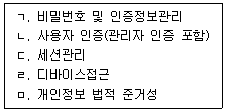
- ㄱ, ㄴ, ㄷ
- ㄱ, ㄴ, ㄹ
- ㄴ, ㄷ, ㄹ
- ㄷ, ㄹ, ㅁ
(정답률: 51%)
22. 유비쿼터스 센서 네트워크(USN) 구성에서 기본적인 기술 구성요소가 아닌 것은?
- 버스부(BUS)
- 제어부(MCU)
- 센서부(Sensor)
- 통신부(Radio)
(정답률: 65%)
23. 가입자선에 위치하고 단말기와 디지털 네트워크 사이의 인터페이스를 제공하며, 유니폴라 신호를 바이폴라 신호로 변환시키는 것은?
- DSU(Digital Service Unit)
- 변복조기(MODEM)
- CSU(Channel Service Unit)
- 다중화기
(정답률: 68%)
24. 다음 중 아날로그 신호를 디지털 신호로 변환하여 전송매체로 전송하기 위한 과정으로 옳은 것은?
- 표본화-부호화-양자화-펄스발생기-통신채널
- 펄스발생기-부호화-표본화-양자화-통신채널
- 표본화-양자화-부호화-통신채널-펄스발생기
- 표본화-양자화-부호화-펄스발생기-통신채널
(정답률: 65%)
25. 1,200[bps] 속도를 갖는 4채널을 다중화한다면 다중화 설비 출력 속도는 최소 얼마인가?
- 1,200[bps]
- 2,400[bps]
- 4,800[bps]
- 9,600[bps]
(정답률: 70%)
26. 20개의 중계선으로 5[Erl]의 호량을 운반하였다면 이 중계선의 효율은 몇 [%] 인가?
- 20[%]
- 25[%]
- 30[%]
- 35[%]
(정답률: 72%)
27. 다음 중 재난안전통신망 단말기에서 지원하는 음성 코덱이 아닌 것은?
- EVS(Enhanced Voice Service)
- WB-AMR(Wideband – Adaptive Multi Rate)
- NB-AMR(Narrowband – Adaptive Multi Rate)
- VP9
(정답률: 66%)
28. 각종 사물에 컴퓨터 칩과 통신 기능에 내장하여 인터넷에 연결하는 기술은?
- IoT(Internet of Things)
- Cloud Computing
- Blockchain
- Big Data
(정답률: 79%)
29. 멀티미디어기기 중 비디오텍스의 특성으로 틀린 것은?
- 대용량의 축적 정보를 제공한다.
- 쌍방향 통신 기능을 갖는 검색·회화형 화상 정보 서비스이다.
- 정보 제공자와 운용 주체가 같다.
- 시간적인 제한은 없으나 화면의 전송이 느리고 Interface가 필요하다.
(정답률: 57%)
30. 다음 중 SIP(Session Initiation Protocol) 서버의 기능이 아닌 것은?
- SIP 장비의 등록
- SIP 장비간 호 처리
- SIP 호 연결 Proxy 기능
- 멀티미디어 정보 관리 및 제공
(정답률: 68%)
31. 웹 브라우저간에 플러그인의 도움없이 서로 통신을 할 수 있도록 설계되어 음성통화, 영상통화 등 영상회의 시스템에 사용되는 API(Application Program Interface)는?
- UAS(User Agent Server)
- H.323
- WebRTC(Web Real-Time Communication)
- H.264
(정답률: 63%)
32. IPTV의 보안기술 중 CAS(Conditional Access System)와 DRM(Digital Right Management)에 대한 설명으로 틀린 것은?
- CAS는 인증된 사용자만이 프로그램을 수신한다.
- DRM은 콘텐츠 복제와 유통방지를 목적으로 한다.
- CAS는 다단계 암호화 키를 사용한다.
- DRM은 단방향 통신망에서 사용한다.
(정답률: 72%)
33. 다음 보기에서 우리나라 디지털 지상파 HDTV 방송의 전송방식 표준 기술로 바르게 나열한 것은?
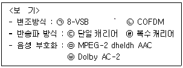
- ㉠, ㉣, ㉥
- ㉡, ㉢, ㉤
- ㉠, ㉢, ㉥
- ㉡, ㉣, ㉤
(정답률: 57%)
34. 다음 중 RFID(Radio Frequency Identification)의 구성요소에 대한 설명으로 틀린 것은? (23-02-01)
- 태그는 배터리 내장 유무에 따라 능동형과 수동형으로 구분된다.
- 리더기는 주파수 발신 제어 및 수신 데이터의 해독을 실시한다.
- 리더기는 용도에 따라 고정형, 이동형, 휴대형으로 구분된다.
- 태그는 데이터가 입력되는 IC칩과 배터리로 구성된다.
(정답률: 63%)
35. 다음 중 단말형(On-Device) 인공지능(AI) 기술에 대한 설명으로 틀린 것은?
- 중앙 서버를 거치지 않고 사용자 단말에서 인공지능 알고리즘을 실행하고 결과를 획득하는 기술이다.
- 단말기 자체적으로 사용자의 음성데이터를 학습하고 오프라인 환경에서는 사용자의 데이터를 학습할 수 없다.
- 효율적 처리를 위해 신경망 처리장치와 같은 하드웨어와 경량화된 소프트웨어 최적화 솔류션 등이 이용된다.
- 단말형 인공지능의 가장 큰 장점은 보안성과 실시간성이다.
(정답률: 65%)
36. 다음 중 긴급구조용 위치정보를 제공하는 웨어러블 기기의 구성요소가 아닌 것은?
- 무선(이동)통신모듈
- SNS(Social Networking Service)처리모듈
- A-GNSS(Assisted Global Navigation Satellite Systems) 모듈
- WiFi 모듈
(정답률: 64%)
37. 다음 보기에서 설명하고 있는 기술 용어는?
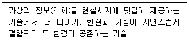
- 가상현실(VR, Virtual Reality)
- 증강현실(AR, Augmented Reality)
- 혼합현실(MR, Mixed Reality)
- 홀로그램(Hologram)
(정답률: 60%)
38. 다음 중 HMD(Head Mounted Display)기반의 가상현실 핵심기술 요소가 아닌 것은?
- 영상 추적(Image Tracking) 기술
- 머리 움직임 추적(Head Tracking) 기술
- 넓은 시야각(Wide Field of View)구현 기술
- 입체 3D(Stereoscopic 3D)구현 기술
(정답률: 57%)
39. 다음 중 프린터의 인쇄 이미지 해상도나 선명도를 표시하는 방식은?
- Pixel
- Lux
- DPI
- Lumen
(정답률: 63%)
40. 다음 보기의 내용에서 설명하는 전력제어 기술은?
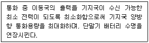
- 폐루프 전력제어
- 순방향 전력제어
- 개방루프 전력제어
- 외부루프 전력제어
(정답률: 62%)
3과목: 정보통신 네트워크
41. 클래스 B주소를 가지고 서브넷 마스크 255.255.255.240으로 서브넷을 만들었을 때 나오는 서브넷의 수와 호스트의 수가 맞게 짝지어진 것은?
- 서브넷 2,048, 호스트 14
- 서브넷 14, 호스트 2,048
- 서브넷 4,094, 호스트 14
- 서브넷 14, 호스트 4,094
(정답률: 58%)
42. OSI 7계층 중 시스템간의 전송로 상에서 순서제어, 오류제어, 회복처리, 흐름제어 등의 기능을 실행하는 계층은?
- 물리 계층
- 트랜스포트 계층
- 데이터 링크 계층
- 세션 계층
(정답률: 66%)
43. 다음 중 네트워크 호스트간 패킷 전송에서 슬라이딩 윈도우 흐름제어 기법에 대한 설명으로 틀린 것은?
- 송신측에서 ACK(확인응답) 프레임을 수신하면 윈도우 크기가 늘어난다.
- 윈도우는 전송 및 수신측에서 만들어진 버퍼의 크기를 말한다.
- ACK(확인응답) 수신없이 여러 개의 프레임을 연속적으로 전송할 수 있다.
- 네트워크에 혼잡현상이 발생하면 윈도우 크기를 1로 감소시킨다.
(정답률: 50%)
44. 인터넷사의 IP 주소 할당 방식인 CIDR(Classless Inter Domain Routing) 형태로 192.168.128.0/20 으로 표기된 네트워크가 가질 수 있는 IP 주소의 수는?
- 512
- 1,024
- 2,048
- 4,096
(정답률: 52%)
45. 다음 중 210.200.220.78/26 네트워크의 호스트로 할당할 수 있는 첫 번째 IP와 마지막 IP 주소는 무엇인가?
- 210.200.220.65, 210.200.220.126
- 210.200.220.64, 210.200.220.125
- 210.200.220.64, 210.200.220.127
- 210.200.220.65, 210.200.220.127
(정답률: 47%)
46. 데이터 통신 프로토콜인 UDP(User Datagram Protocol)와 비교할 때 TCP(Transmisson Control Protocol)의 장점이 아닌 것은?
- 전송전 연결설정
- 흐름제어
- 혼잡제어
- 멀티캐스팅 가능
(정답률: 58%)
47. IP기반 네트워크상의 관리 프로토콜인 SNMP(Simple Network Management Procotol)의 데이터 수집 방식에 대한 설명으로 틀린 것은?
- 관리자는 에이전트에게 Request 메시지를 보낸다.
- 에이전트는 관리자에게 Response 메시지를 보낸다.
- 이벤트가 발생하면 에이전트는 관리자에게 Trap 메시지를 보낸다.
- 이벤트가 발생하면 관리자나 에이전트 중 먼저 인지한 곳에서 Trap 메시지를 보낸다.
(정답률: 64%)
48. 다음 중 근거리 정보통신망을 구성하기 위한 네트워크 접속장치가 아닌 것은?
- 허브
- 라우터
- 브릿지
- 모뎀
(정답률: 65%)
49. 이더넷에서 장치가 매체에 접속하는 것을 관리하는 방법으로 데이터 충돌을 감지하고 이를 해소하는 방식을 무엇이라 하는가?
- CRC(Cyclic Resundancy Check)
- CSMA/CD(Carrier Sense Multiple Access/Collision Detection)
- FCS(Frame Check Sequency)
- ZRM(Zmanda Recovery Manager)
(정답률: 67%)
50. VLAN(Virtual Local Area Network)으로 네트워크를 분리하는 일이 이루어지는 네트워크 장치는 무엇인가?
- L2 스위치
- 라우터
- DHCP(Dynamic Host Configuration Protocol) 서버
- DNS(Domain Name System) 서버
(정답률: 56%)
51. 다음 보기의 문장 괄호( ) 안에 들어갈 적합한 용어는?
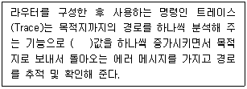
- TTL(Time To Live)
- Metric
- Hold time
- Hop
(정답률: 65%)
52. IP 기반 네트워크의 OSPF(Open Shortest Path First)에서 갱신정보를 인접 라우터에 전송하고 인접 라우터는 다시 자신의 인접 라우터에 갱신정보를 즉시 전달하여 갱신정보가 네트워크 전역으로 신속하게 전달되도록 하는 과정은?
- 플러딩(Flooding)
- 경로 태크(Route Tag)
- 헬로우(Hello)
- 데이터베이스 교환(Database Exchange)
(정답률: 64%)
53. 평균고장발생 간격이 23시간이고, 평균복구시간이 1시간인 정보통신시스템의 1일 가동률은 약 몇 [%]인가?
- 104.34[%]
- 100.00[%]
- 95.83[%]
- 91.67[%]
(정답률: 72%)
54. 다음 중 교환기의 과금처리 방식 중 하나인 중앙집중처리방식(CAMA)에 대한 설명으로 틀린 것은?
- 다수의 교환국망일 때 유리하다.
- 신뢰성이 좋은 전용선이 필요하다.
- 유지보수에 많은 시간이 소요된다.
- 과금센터 구축에 큰 경비가 들어간다.
(정답률: 58%)
55. 다음 중 네트워크 통신의 패킷교환방식과 관련된 내용으로 틀린 것은?
- 축적전달(Stroe and Forward) 방식
- 지연이 적게 요구되는 서비스에 적합
- 패킷을 큐에 저장하였다가 전송하는 방식
- X.25 교환망에 적용
(정답률: 49%)
56. 다음 보기의 괄호( ) 안에 내용으로 적합한 것은?
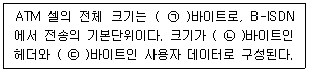
- ㉠ 53, ㉡ 5, ㉢ 48
- ㉠ 53, ㉡ 48, ㉢ 5
- ㉠ 48, ㉡ 5, ㉢ 43
- ㉠ 48, ㉡ 43, ㉢ 5
(정답률: 61%)
57. 디지털 이동통신 시스템에서 이동국(단말기)이 자신의 위치와 상태를 교환기에 수시로 알려줌으로써 전체 시스템의 부하를 줄여주고 이동국 착신호의 신뢰성을 증가시키는 것은?
- 위치등록
- 전력제어
- 핸드오프
- 다이버시티
(정답률: 58%)
58. 다음 중 정지위성에 대한 설명으로 틀린 것은?
- 지구 전체 커버 위성 수는 90도 간격으로 최소 4개이다.
- 지구 표면으로부터 정지 궤도의 고도는 약 36,000[km]이다.
- 지구의 자전주기와 같은 주기로 지구를 공전하는 인공위성이다.
- 지구의 인력과 위성의 원심력이 일치하는 공간에 위치한다.
(정답률: 67%)
59. 다음 중 네트워크 통신에서 기존 일반적인 네트워킹과 비교하여 SDN(Software Defined Network)의 장점이 아닌 것은?
- 확장성
- 유연성
- 비용절감
- 넓은 대역폭
(정답률: 55%)
60. 서비스 회사가 자신의 네트워크 망을 통해 영상을 스트리밍해 주는 서비스를 무엇이라 하는가?
- STB(Set Top Box)
- IPTV(Internet Protocol Television)
- VoIP(Voice Over Internet Protocol)
- VPN(Virual Private Network)
(정답률: 68%)
4과목: 정보시스템 운용
61. 리눅스 시스템에서 지정된 여러 개의 파일을 아카이브라고 부르는 하나의 파일로 만들거나, 하나의 아카이브 파일에 집적된 여러 개의 파일을 원래의 형태대로 추출하는 리눅스 쉘 명령어는?
- tar(Tape Archive)
- gzip
- bzip
- bunzip
(정답률: 60%)
62. 리눅스 커널에서 보안과 관련된 패치 등의 집합체이며 해킹 공격의 방어에 효과적인 방법은?
- 긴급 복구 디스켓 만들기
- /boot 파티션 점검
- 커널 튜닝 적용
- Openwall 커널 패치 적용
(정답률: 55%)
63. 다음 중 클라우딩 컴퓨팅 가상화의 주요 이점이 아닌 것은?
- 비용 절감
- 정합성 향상
- 효율성 및 생산성 향상
- 재해 복구 상황에서 다운타임 감소 및 탄력성 향상
(정답률: 49%)
64. 다음 중 서버부하분산 방식 중 정적부하방식이 아닌 것은?
- 라운드로빈
- 가중치
- 액티브-스탠바이
- 최소응답시간
(정답률: 47%)
65. 다음 보기에서 분산 데이터베이스의 투명성은 무엇인가?
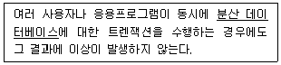
- 위치투명성
- 복제투명성
- 병행투명성
- 분할투명성
(정답률: 56%)
66. 다음 중 통합관제센터 구축 이후 진행되는 성능시험 단계별 시험 내역으로 틀린 것은?
- 단위 기능시험 : 시스템별 요구사항 명세서에 명시된 기능들의 수행여부를 판단하기 위한 시험
- 통합시험 : 시스템간 서비스 레벨의 연동 및 End-to-End 연동시험
- 실환경 시험 : 최종단계의 시험으로 실제 운영환경과 동일한 시험
- BMT(Bench Mark Test) 성능시험 : 장비도입을 위한 장비간 성능 비교시험
(정답률: 59%)
67. 다음 중 접지설비의 접지저항에 대한 설명으로 틀린 것은?
- 접지선은 접지 저항값이 10[Ω] 이하인 경우에는 1.6[mm]이상, 접지 저항값이 100[Ω] 이하인 경우에는 직경 3.6[mm] 이상의 PVC(Poly Vinyl Chloride) 피복 동선 또는 그 이상의 절연 효과가 있는 전선을 사용한다.
- 금속성 함체이나 광섬유 접속등과 같이 내부에 전기적 접속이 없는 경우 접지를 아니할 수 있다.
- 접지체는 가스, 산 등에 의한 부식의 우려가 없는 곳에 매설하여야 하며, 접지체 상단이 지표로부터 수직 깊이 75[cm] 이상되도록 매설하되 동결심도보다 깊게 하여야 한다.
- 전도성이 없는 인장선을 사용하는 광섬유케이블의 경우 접지를 아니할 수 있다.
(정답률: 52%)
68. 다음 중 건물의 통신설비인 중간단자함(IDF)에 관한 설명으로 틀린 것은?
- 층단자함에서 각 인출구 까지는 성형배선 방식으로 한다.
- 국선단자함과 층단자함은 용도가 상이하다.
- 구내교환기를 설치하는 경우에는 층단자함에 수용하여야 한다.
- 선로의 분기 및 접속을 위하여 필요한 곳에 설치한다.
(정답률: 54%)
69. 다음 중 건물의 화재감지 방식 중 연기가 빛을 차단하거나 반사하는 원리를 이용한 연기감지 센서는?
- 광전식
- 이온화식
- 정온식
- 자외선 불꽃
(정답률: 71%)
70. 다음 보기에서 설명하는 통신회선 장비의 명칭은?
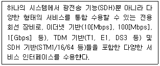
- WDM(Wavelength Division Multiplexing)
- MSPP(Multi Service Provisioning Platform)
- ROADM(Re-configurable Opical Add-Drop Multiplexer)
- 캐리어 이더넷
(정답률: 56%)
71. 네트워크 통신에서 '전용회선 서비스에 주로 사용되는 기간망'의 안정성을 고려하여 구성하는 망 형태가 아닌 것은?
- Ring형
- Mesh형
- 8자형
- Star형
(정답률: 48%)
72. 다음 보기와 같은 특징을 갖는 서버기반 논리적 망분리 방식은?
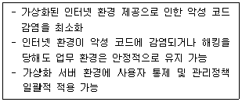
- 인터넷망 가상화
- 업무망 가상화
- 컴퓨터기반 가상화
- 네트워크기반 가상화
(정답률: 57%)
73. 다음 중 정보보호 관리체계의 인증 의무대상자가 아닌 것은?
- 정보통신서비스 부문 전년도 매출액이 100억원 이상인 자
- 연간 매출액 또는 세입 등이 150억원 이상인 자
- 집적정보통신시설 사업자
- 정보통신서비스 부문 3개월간의 일일평균 이용자수 100만명 이상인 자
(정답률: 57%)
74. 다음 보기는 정보보호 관리체계에 대한 “정보통신망 이용촉진 및 정보보호 등에 관한 법률” 일부 조항이다. 괄호( ) 안에 들어갈 단어로 적합하지 않은 것은?
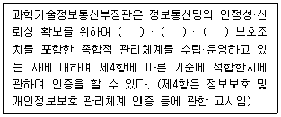
- 물리적
- 관리적
- 기술적
- 정책적
(정답률: 63%)
75. 데이터의 비대칭암호화 방식에서 수신자의 공개키로 암호화하여 이메일을 전송할 때 얻을 수 있는 기능은?
- 무결성(Integrity)
- 기밀성(Confidentiality)
- 부인방지(Non Repudiation)
- 가용성(Availability)
(정답률: 57%)
76. 다음 암호화 방식 중 암호화·복호화 종류가 다른 것은?
- RSA(ron Rivest, adi Shamir, leonard Adleman)
- IDEA(International Data Encrption Algorithm)
- DES(Data Encryption Standard)
- AES(Advanced Encryption Standard)
(정답률: 54%)
77. 다음 중 네트워크를 관리하는 통신망인 TMN(Telecommunication Management Network)에서 정의되고 있는 5가지 관리 기능이 아닌 것은?
- 성능관리
- 보안관리
- 조직관리
- 구성관리
(정답률: 66%)
78. 다음 중 네트워크 자원들의 상태를 모니터링하고 이들에 대한 제어를 통해서 안정적인 네트워크 서비스를 제공하는 것은?
- 게이트웨이 관리
- 서버 관리
- 네트워크 관리
- 시스템 관리
(정답률: 68%)
79. 다음 중 WPAN(Wireless Personal Area Network) 방식이 아닌 것은?
- Zigbee
- Bluetooth
- UMB(Ultra Wide Band)
- BWA(Broadband Wireless Access)
(정답률: 52%)
80. 공격자가 두 객체 사이의 세션을 통제하고, 객체 중 하나인 것처럼 가장하여 객체를 속이는 해킹기법은?
- 스푸핑(Spoofing)
- 하이재킹(Hijacking)
- 피싱(Phishing)
- 파밍(Pharming)
(정답률: 52%)
5과목: 컴퓨터일반 및 정보설비기준
81. 다음 보기에서 실행하는 프로토콜로 적합한 것은?
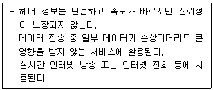
- IP(Internet Protocol)
- TCP(Transmission Control Protocol)
- UDP(User Datatram Protocol)
- ICMP(Internet Control Message Protocol)
(정답률: 52%)
82. 다음 중 클라우드 컴퓨팅 서비스 유형으로 틀린 것은?
- BPaaS : 비즈니스 프로세스 클라우드 서비스
- IaaS : 인프라 클라우드 서비스
- PaaS : 플랫폼 클라우드 서비스
- SaaS : 공용 클라우드 서비스
(정답률: 62%)
83. 정보통신공사를 설계한 용역업자는 설계도서를 언제까지 보관하여야 하는가?
- 공사의 목적물이 폐지될 때까지
- 공사가 준공된 후 2년간 보관
- 공사가 준공된 후 5년간 보관
- 하자담보 책임기간이 종료될 때까지
(정답률: 59%)
84. 일반 범용컴퓨터의 하드디스크 오류가 발생하였을 때, 하드디스크를 재구성하지 않고 복사된 것을 대체함으로써 데이터를 복구할 수 있는 RAID(Redundant Array of Independent Disks) 레벨(Level)은?
- RAID 0
- RAID 1
- RAID 3
- RAID 5
(정답률: 59%)
85. 32비트의 데이터에서 단일 비트 오류를 정정하려고 한다. 해밍 오류 정정 코드(Hamming Error Correction Code)를 사용한다면 몇 개의 검사 비트들이 필요한가?
- 4비트
- 5비트
- 6비트
- 7비트
(정답률: 49%)
86. 다음 중 범용 컴퓨터의 입출력 프로세서(I/O Processor) 기능에 대한 설명으로 틀린 것은?
- 컴퓨터 내부에 설치된 입출력 시스템은 중앙처리장치의 제어에 의하여 동작이 수행된다.
- 중앙처리장치의 입출력에 대한 접속 업무를 대신 전담하는 장치이다.
- 중앙처리장치와 인터페이스 사이에 전용 입출력 프로세서(IOP: I/O Processor)를 설치하여 많은 입출력장치를 관리한다.
- 중앙처리장치와 버스(Bus)를 통하여 접속되므로 속도가 매우 느리다.
(정답률: 66%)
87. 동심원을 이루는 저장장치에 데이터를 기록하는 방식으로 등각속도(CAV: Constant Angular Velocity)와 등선속도(CLV: Constant Linear Velocity)가 있다. 자기 디스크(Magnetic Disk)와 컴팩트 디스크(CD)의 기록 방식이 올바르게 나열된 것은?
- 자기 디스키 : CAV, 컴팩트 디스크 : CAV
- 자기 디스키 : CLV, 컴팩트 디스크 : CAV
- 자기 디스키 : CAV, 컴팩트 디스크 : CLV
- 자기 디스키 : CLV, 컴팩트 디스크 : CLV
(정답률: 56%)
88. 다음 중 일반 범용 컴퓨터의 운영체제에서 컴퓨터 내의 물리적인 장치인 CPU, 메모리, 입출력장치 등과 논리적 자원인 파일들이 효율적으로 고유의 기능을 수행하도록 관리하고 제어하는 부분은 무엇인가?
- 메모리
- GUI(Graphical User Interface)
- 커널
- I/O(Input/Output)
(정답률: 63%)
89. 다음 중 일반 범용 컴퓨터의 중앙처리장치(CPU)의 스케줄링 기법을 비교하는 성능 기준으로 틀린 것은?
- CPU 활용법: CPU가 작동한 총시간 대비 프로세스들이 실제 사용시간
- 처리율(Throughput): 단위 시간당 처리 중인 프로세스의 수
- 대기시간(Waiting Time): 프로세스가 준비 큐(Ready Queue)에서 스케쥴링될 때까지 기다리는 시간
- 응답시간: 대화형 시스템에서 입력한 명령의 처리결과가 나올 때까지 소요되는 시간
(정답률: 55%)
90. 일반 범용컴퓨터에서 메모리에 접근하지 않아 실행 사이클이 짧아지고, 명령어에 사용될 데이터가 오퍼랜드(Operand) 자체로 연산 대상이 되는 주소지정방식은?
- 베이스 레지스터 주소지정 방식(Base Register Addressing Mode)
- 인덱스 주소지정 방식(Index Addressing Mode)
- 즉시 주소지정 방식(Immediate Addressing Mode)
- 묵시적 주소지정 방식(Implied Addressing Mode)
(정답률: 58%)
91. 네트워크에서 IP주소의 네트워크 주소와 호스트 주소를 구분해 주는 것은?
- Subnet Mask
- ARP(Address Resolution Protocol)
- DNS(Domain Name System)
- RARP(Reverse Address Resolution Protocol)
(정답률: 67%)
92. 다음 보기에서 설명하는 것은 무엇인가?
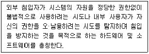
- 침입탐지시스템(IDS)
- 프록시(Proxy)
- 침입차단시스(Firewall)
- DNS(Domain Name System) 서버
(정답률: 57%)
93. 다음 중 디지털 서명 알고리즘 아닌 것은?
- 서명 알고리즘
- 해싱 알고리즘
- 증명 알고리즘
- 키생성 알고리즘
(정답률: 52%)
94. 2진수(100110.100101)를 8진수로 변환한 값은?
- 26.91
- 26.45
- 46.91
- 46.45
(정답률: 60%)
95. 분산 컴퓨팅에 관한 설명으로 틀린 것은?
- 분산컴퓨팅의 목적은 성능확대와 가용성에 있다.
- 성능확대를 위해서는 컴퓨터 클러스터의 활용으로 수직적 성능확대와 수평적 성능확대가 있다.
- 수평적 성능확대는 통신연결을 높은 대역의 통신회선으로 업그레이드 하여 성능 향상 시키는 것이다.
- 수직적 성능확대는 컴퓨터 자체의 성능을 업그레이드 하는 것을 말한다. CPU, 기억장치 등의 증설로 성능향상을 시킨다.
(정답률: 55%)
96. 다음 중 정보통신공사업자의 시공능력평가에 포함되지 않는 사항은?
- 경영진평가
- 자본금평가
- 기술력평가
- 경력평가
(정답률: 61%)
97. 다음 중 방송통신설비 기술기준 적합조사를 실시하는 경우가 아닌 것은?
- 방송통신설비 관련 시책을 수립하기 위한 경우
- 국가비상사태를 대비하기 위한 경우
- 신기술 및 신통신방식 도입을 위한 경우
- 방송통신설비의 이상으로 광범위한 방송통신 장애가 발생할 우려가 있는 경우
(정답률: 59%)
98. 방송통신발전기본 법령에서 규정한 “방송통신설비의 관리규정”에 포함되지 않는 것은?
- 방송통신설비의 유지·보수에 관한 사항
- 방송통신설비 관리조직의 구성·직무 및 책임에 관한 사항
- 방송통신서비스 이용자의 통신 감청에 관한 사항
- 방송통신설비 장애 시의 조치 및 대책에 관한 사항
(정답률: 66%)
99. 다음 중 정보통신공사업법에서 규정하는 '하도급'에 대한 설명으로 옳은 것은?
- 도급받은 공사의 전부에 대하여 수급인이 제3자와 체결하는 계약을 말한다.
- 도급받은 공사의 일부에 대하여 하도급인이 제3자와 체결하는 계약을 말한다.
- 도급받은 공사의 일부에 대하여 수급인이 제3자와 체결하는 계약을 말한다.
- 도급받은 공사의 전부에 대하여 하도급인이 제3자와 체결하는 계약을 말한다.
(정답률: 64%)
100. 다음 업무용 건축물의 구내통신설비 구성도에서 (가)의 명칭은?
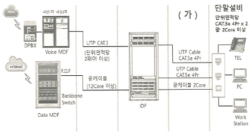
- 구내통신실
- 수평 배선계
- 중간 단자함
- 건물 간선계
(정답률: 55%)